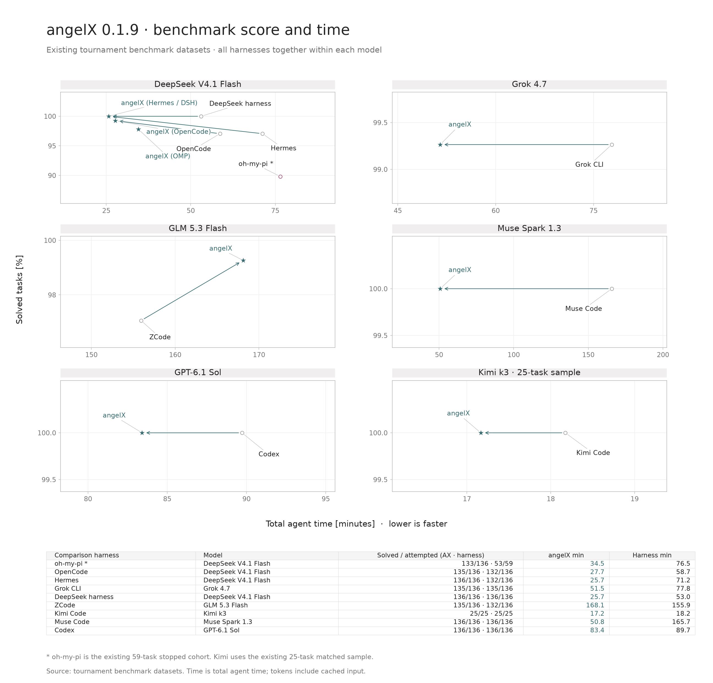

angelX
136 repository-repair tasks · 48 JavaScript, 34 Python, 30 Rust, 24 C++ · independently graded task tests
Each row runs angelX and one other coding harness on the same model and the same tournament benchmark tasks. Time is total agent time in minutes; lower is faster.
| Comparison harness | Model | Solved · angelX | Solved · harness | angelX min | Harness min |
|---|---|---|---|---|---|
| Codex | GPT-6.1 Sol | 136 / 136 | 136 / 136 | 83.4 | 89.7 |
| Muse Code | Muse Spark 1.3 | 136 / 136 | 136 / 136 | 50.8 | 165.7 |
| DeepSeek harness | DeepSeek V4.1 Flash | 136 / 136 | 136 / 136 | 25.7 | 53.0 |
| Hermes | DeepSeek V4.1 Flash | 136 / 136 | 132 / 136 | 25.7 | 71.2 |
| OpenCode | DeepSeek V4.1 Flash | 135 / 136 | 132 / 136 | 27.7 | 58.7 |
| Grok CLI | Grok 4.7 | 135 / 136 | 135 / 136 | 51.5 | 77.8 |
| ZCode | GLM 5.3 Flash | 135 / 136 | 132 / 136 | 168.1 | 155.9 |
| Kimi Code | Kimi k3 · 25-task sample | 25 / 25 | 25 / 25 | 17.2 | 18.2 |
| oh-my-pi | DeepSeek V4.1 Flash | 133 / 136 | 53 / 59 59-task stopped cohort | 34.5 | 76.5 |
angelX solved as many tasks as the other harness, or more, in every row. Its total agent time was lower in eight of the nine rows; ZCode on GLM 5.3 Flash took less time (155.9 vs 168.1 minutes) and solved three fewer tasks. The oh-my-pi row compares against the existing 59-task stopped cohort and the Kimi row uses the existing 25-task matched sample, so neither is a full 136-task comparison. Host hardware is not stated with these runs, so they are not hardware throughput claims.

One attempt per task, 600-second agent limit. Medians are per-attempt agent wall time; failures remain in the cohort.
| Date | Version | Model / setting | Solved | Median wall | Input tokens |
|---|---|---|---|---|---|
| 2026-09-30 | 0.1.8 | DeepSeek V4.1 Flash · thinking off · run 1 | 135 / 136 | 9.9 s | 8.7 M |
| 2026-09-30 | 0.1.8 | DeepSeek V4.1 Flash · thinking off · run 2 | 135 / 136 | 9.1 s | 6.9 M |
| 2026-09-23 | 0.1.6 | GLM-5.3-Flash · thinking low | 134 / 136 | 46.1 s | 9.4 M |
| 2026-09-23 | 0.1.6 | Grok 4.7 · thinking low | 136 / 136 | 17.5 s | 6.7 M |
| 2026-09-23 | 0.1.6 | Muse Spark · thinking low | 136 / 136 | 25.5 s | 5.9 M |
Configuration: Prime Intellect Verifiers v0.3.1, task-native tests, temperature 0, fresh environment per attempt. The September 23 Muse cell used its recommended temperature 1.0. These are historical binaries; the current 0.2.3 release has no published full-suite result. Host CPU/GPU and memory were not recorded in the public summaries, so these figures are not hardware throughput claims.
Source: public benchmark tables and methodology · full-cohort timing audit and comparison limits.
The interactive plots below use the original September 21 cells. They do not describe the current release. Agent wall time includes failed attempts; it is not a measure of overall campaign elapsed time.
| Harness | DeepSeek V4.1 Flash thinking off |
GLM-5.3-Flash thinking low |
Total both models |
|---|---|---|---|
| angelX | 133 / 136 | 135 / 136 | 268 / 272 98.5% |
| OpenCode 1.18.31 | 132 / 136 | 133 / 136 | 265 / 272 97.4% |
| oh-my-pi 18.2.4 | 86 / 93 200M-token budget cap | 133 / 136 | — partial DeepSeek cell |
Tokens generated and model calls made per task (cap at 2.5k)
Wall time per attempt in run order (medians dotted)
Cumulative, cached and uncached
Share of input tokens served from provider cache
Graded by task-native test suites on Prime Intellect evaluators (Verifiers v0.3.1) · 600 s wall cap · 2026-09-21. DeepSeek used thinking off; GLM used thinking low. Machine-readable September 21 source.